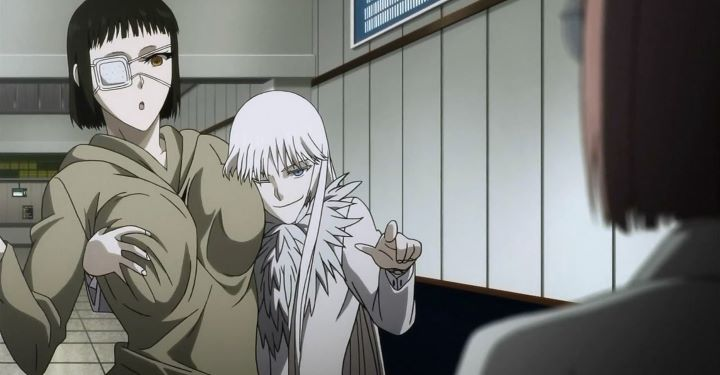

"Black Lagoon" is a darn good gritty action show. There are a lot of good action shows in anime, but "Black Lagoon" still stands out. If you liked "Black Lagoon" and want something similar, many people will offer "Jormungand," a more recent show about a illegal arms dealer and her men. In most ways, it will satisfy you if you are looking for something to compare with "Black Lagoon." In other ways, it is actually much better, in some ways worse, and overall deserves to stand on its own. Its a shame the two shows were compared so frequently upon its initial broadcast.Koko Hekmatyar is a arms dealer. She is also a young woman with pale silver hair. She is also a little coo-coo crazy. Like a fox. A druken fox that sees ten steps ahead and nearly stumbles on the path right in front of her. The show follows a separate character, a child solider named Jonah, who is hired by Koko as a bodyguard alongside a team of mercenaries. Jonah is special, in being very young, and that he hates guns above everything else, despite his reliance and skill with weapons. Koko promises to show Jonah that not all situations require him to pull the trigger, and that working with her will help reach her goal for "world peace." After that first episode, the show goes into a series of missions, each helping develop the many characters of Koko's squad of hand-picked individuals. While initially without much direction, the individual arcs are interesting enough to want to watch, especially because of the character development. And a handful of action scenes better choreographed than anything else out there. The second season, titled Perfect Order, fairs better as it spends a bit more time focusing on Koko. In both seasons she is a strange character, like an older sister who likes to tease, but darkly serious when provoked, and full of plans to reach her goals. The second season also works with that mission for "world peace," and actually delivers in carrying out a grand plan to achieve it. Is the plan realistic? Maybe not, but it is believable to some extent, and is better than what most other shows come up with (I'm looking at you, "Eden of the East"). The ambitious ideas of the second season alone makes Jormungand stand a bit higher than you'd expect.Not that the story doesn't have problems. A small handful of "enemies" seem completely harmless, reduced to only having a snarl during a meeting between them and Koko, or put there only as observers that never actually do anything to drive the story or threaten anyone. There's also the fun, slice-of-life aspects of the show. While great for comedy, it feels out of place to have these serious adults act like high-school students. Same goes for the fan-service, which for some reason decides to gives us main female characters fully nude in the second season, as if they were worried they were losing your attention. These things may turn some people off, or turn you on... depends on you.  Art is good. Not great, but good. Character design is a concern, especially the female characters, as they all have similar build and a strange hooked smile that makes them look more menacing: this causes them all to look similar but with different hair, causing me to confuse some characters and scenes as possibly a flashback into Koko's life, when they were simply recent events showing the newest enemy. Action scenes really shine when in motion though. What really stands out is the music: the openings, the endings, the haunting scores, the international lyrical tracks, and the several remixes of the "Koko-she-so-loco-I-said-oh-no" rap are all worthy of purchase, making this easily one of my favorite and most varied anime scores I've ever heard. English dub does what it needs to, and I thought Koko's dub voice was perfectly fine, although I hear many others would prefer her sub. Jormungand wants to be many things, and succeeds in some of them with flying colors. But there's always something that keeps holding it back from what could have been the best show of its year. If you're looking for a good action show, though, this'll more than suffice.
- "Ani" More reviews can be found at : https://2danicritic.github.io/ Previous review: review_Joker_Game Next review: review_Joseph_-_King_of_Dreams